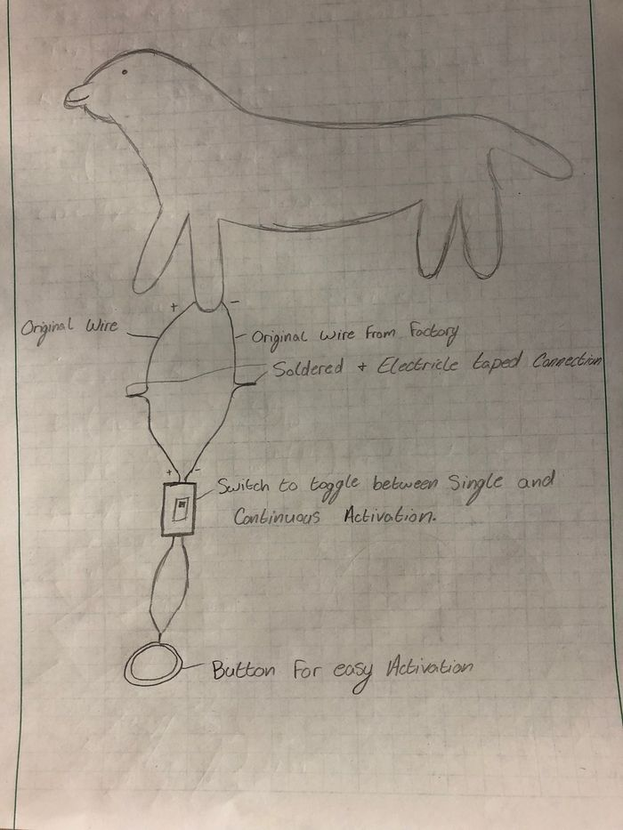
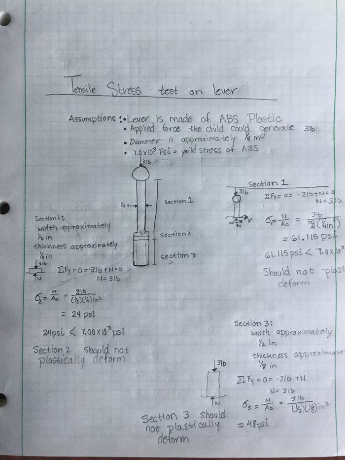
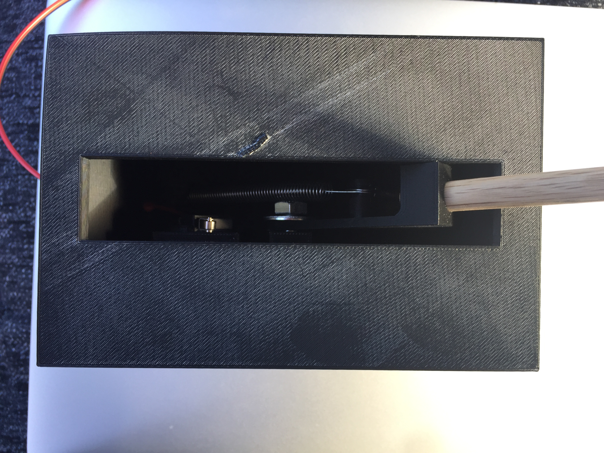

Adapted switches
Abstract
Our projects goal is to adapted multiple toys' switches to an external switch. This is to allow kids with special needs who are unable to generate enough force with their fingers to turn on the toys and also for kids who are unable to use their hands as well.
Team members
- Photo of team
Acknowledge help of others
- other
Problem Statement/overview of the need
The current need is to adapt multiple toys with external switches to allow children with special needs to activate the toys. Some of the children are unable to apply enough force on the current switch located on the toys to activate them. We were asked to adapt certain toys to make it easier for the children to activate the toys and, also if possible adapt the toys with a switch to allow kids who are not able to move their arms to turn on the toys.
Design Specifications
1. Adapt multiple toys to have an external input switch.
2. Find a way to make it possible for children who can not move their arms or hands to activate the toys as well.
Background research
The switches needed for our project already exist, such as the push button switch, to allow the children to activate the toy easier. This switch is pretty easy to obtain online or store purchase. The second design parameter, to find a way to make it possible for children who do not have arm or hand mobility, this type of push button foot switch exist and can also be obtain online at a pretty chip price. There is no gap in the existing technology and the technology needed for the project
Conceptual Design
Summarize your conceptual design process. Develop at least three concepts.
Design Concept 1
This concept simply uses a push button switch for activation and includes a toggle switch that allows for toys to be activated repeatedly instead of every time the button is pushed. 
This is the Cause/Effect Box design. The design is of a speaker and activation button switch connected to a program MP3 to play music for a certain amount of time and then pause.
Design Concept 2
This concept shows the push button foot switch, that would solve our second parameter design. The switch already exists and is obtainable online or in store. The work needed would be to adapt the toy to be able to use the external push button foot switch.
This Push Button Foot switch should solve our second design parameter.
Design Concept 3
This concept is the touch sensor switch. The switch would make it easier to activate the toy without any force being applied. The touch sensor switch is more complicated than the push button switch but it will be more efficient and easier to use for the children.
Evaluate concepts/select candidate
Detailed Design
This section will describe a detailed design process
Description of selected design
The design that was selected was the toggle switch with a Lever-type Elastic-link Switching Mechanism
Detailed description of selected design
Analysis
1. Mobility of lever on switch
2. Stress on lever
3. Circuit of the Cause/effect Box
Engineering analysis 1
In this Engineering analysis it calculates the mobility of the lever on the toggle switch
Engineering analysis 2
In this Engineering analysis we calculated the stress on the lever if the child were to apply 3 lbs of force.

Engineering analysis 3
CAD Drawings
Bill of Materials
Assembly Instructions
The switch was made to be assembled from bottom to top. If for some reason the switch stops working the main components can be excessed by removing the bottom portion of the switch. The switch is going to be given assembled already
and this also includes the adapted toys they have been assembled and will be delivered assembled.
Fabrication Process
Insert pictures of fabrication process
Testing and implementation
In our first attempt to 3-D print the switch, in order to test the mechanism to see if it would function properly. The results of this print show that our first idea seem to not work as we had planned. We realized that the one spring would not do the function that was need, so we end up switching to a two spring mechanism to make it work properly. After solving that problem we printed the switch 3 more time, because of printing error. That was one of our more occurring problem that occurred with our project. Eventually, the box for the switch printed and it came out and did the functions that it need to do. We tried it out with the toys we had already adapted and it worked extremely well. The other portion of our project the cause and effect boom-box had to be test multiple times because we could not get the timing part on the circuit so the music turns off after a certain amount of time. We finally figure out that it was a programming issue and it was solved immediately. The toys that we adapted earlier in the semester were turned in and they were very happy with their performance. The switch is about to be turned in with the remaining adapted toys. The person that gave us the project seemed very pleased with our work and the switch.
Photos of Completed design
Insert pictures of the final product 
Instructions for safe use
Provide a clear summary of safe use for the family. Do not use the device unless supervised by an adult that has been fully understood the safe use of this product. This product was made to be a regular lever switch to activate adapted toys and should only be used to activate said toys. The switch should not be used if water is spilled on it until switch is fully dried. Also should be used on a semi- flat surface to get the best out of the switch.
Project Summary, Reflection
This project gave us great experience on how to apply what we learn in class to solve actual problems. The project also allowed us to experience team work and also on what areas to improve on to be a better team member.